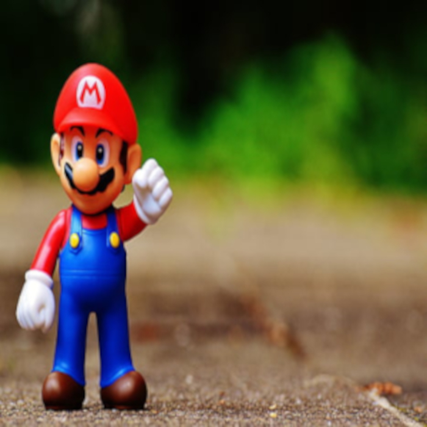
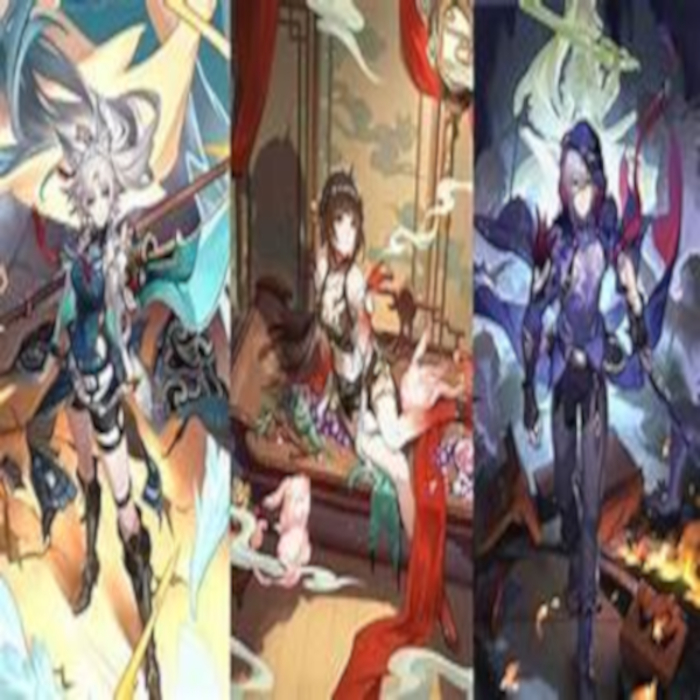
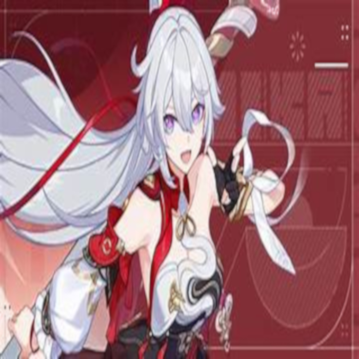

O que me faz gostar desse jogo é a sua mecânica de gameplay, a ambientação do jogo e as trilhas sonoras majestosas que me fazem colocar ele aqui entre os meus jogos favoritos, o jogo de Super Mario Bros.
Citação do Mario:
"Thank you so much for playing my game!"
- Mario
História de Super Mario Bros explicada: História do Super Mario Bros

Para um jogo mobile, é um jogo com ambientação fenomenal, personagens carismáticos, história envolvente, gameplay maneiraça, vale muito a pena jogar esse jogo, com certeza, o game de Honkai Star Rail.
Citação do Phainon:
>"But should dawn have never existed, let the fires of rage burn this body to ashes and transform into the blazing sun of tomorrow!"
- Phainon
História de Honkai Star Rail explicada: História de Honkai Star Rail

É um jogo mais antigo da franquia Honkai, sendo o primeiro que vai iniciar toda a série de jogos da Hoyo, transformando esse ambiente em algo super nostálgico e com uma história espetacular, assim como Honkai Star Rail, em Honkai Impact 3rd.
Citação da Kiana:
>"Fight for all that is beautiful in the world."
- Kiana Kaslana
História de Honkai Impact 3rd explicada: História de Honkai Impact 3rd